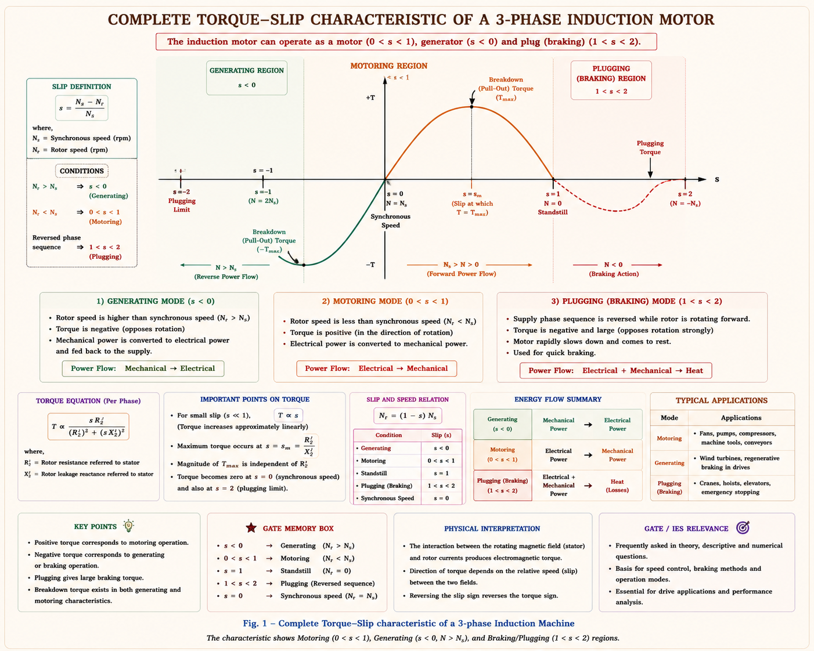
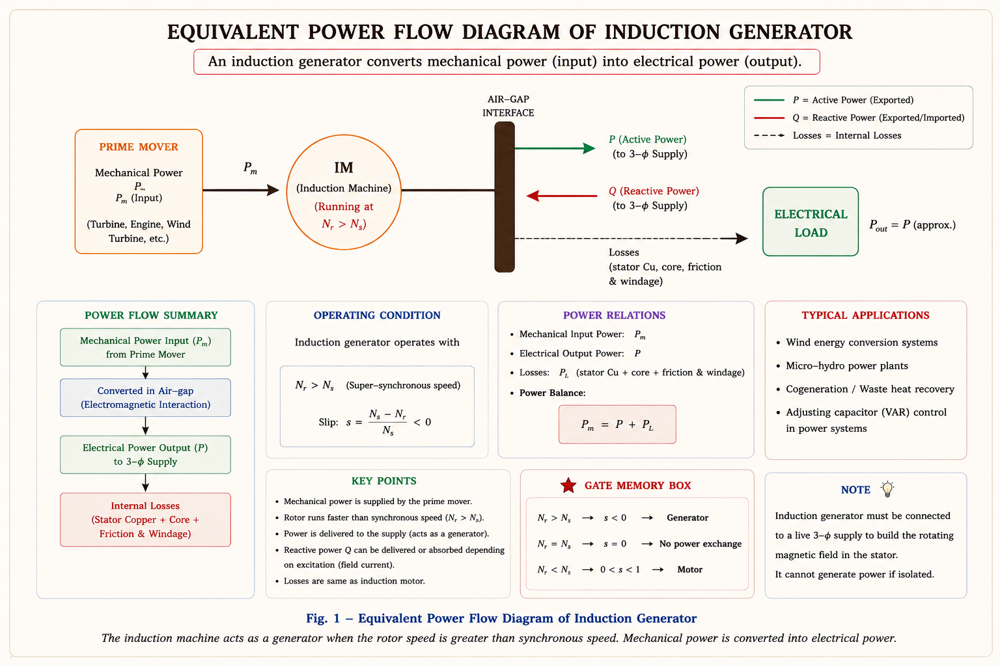
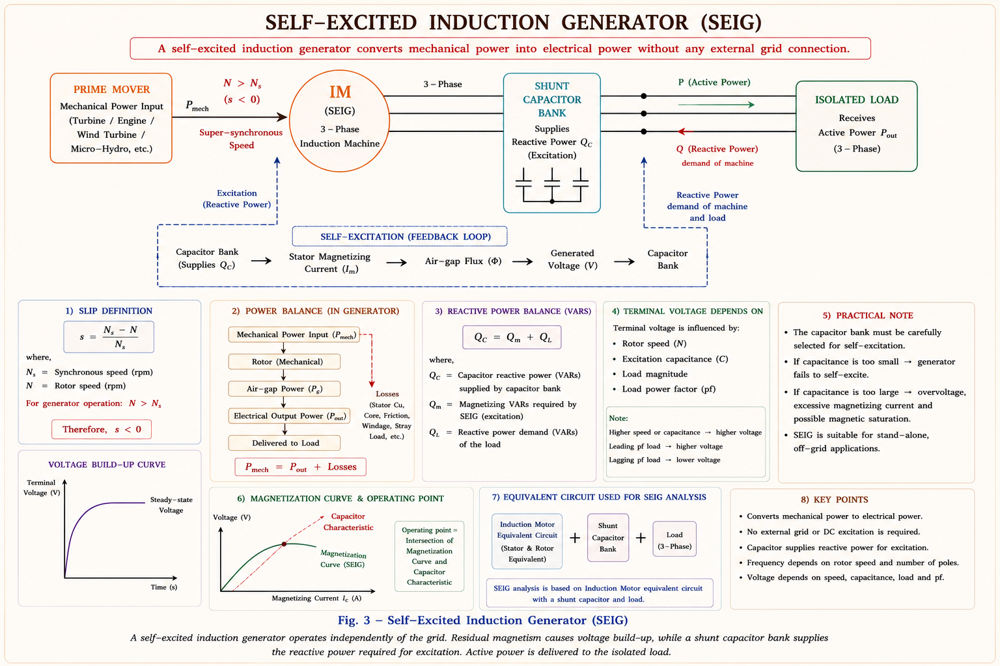
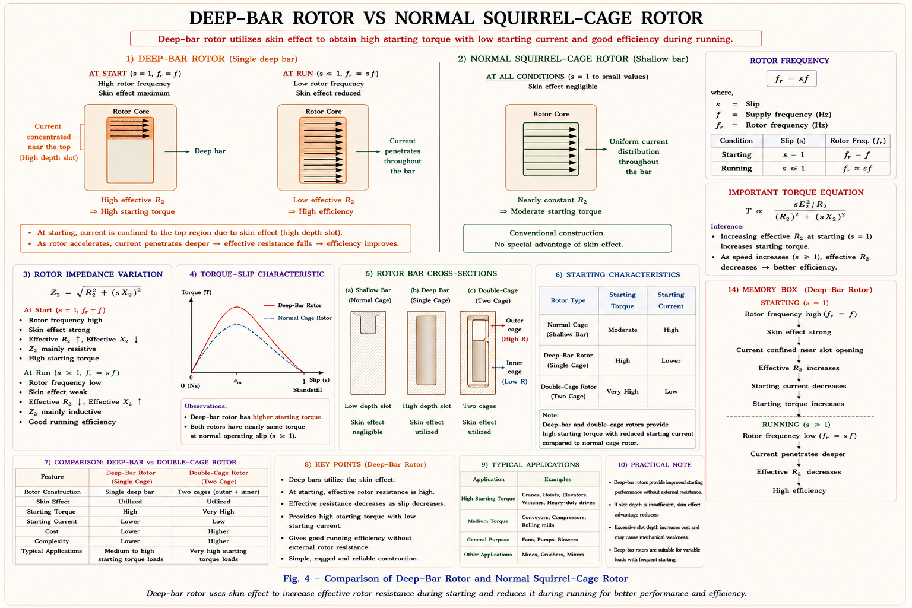
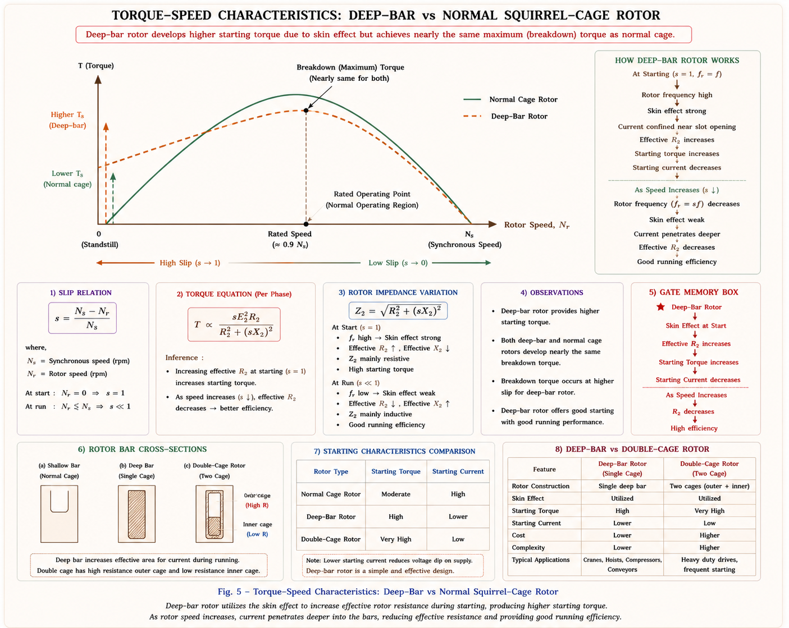
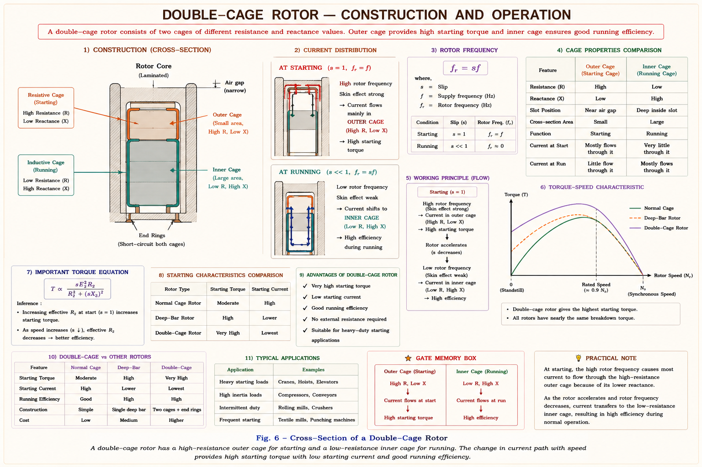
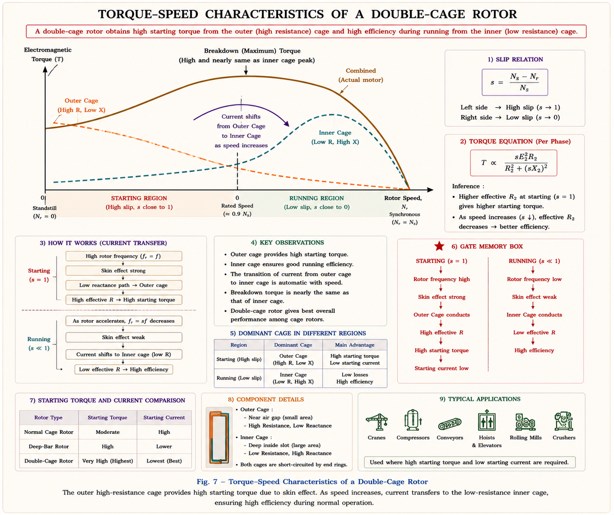
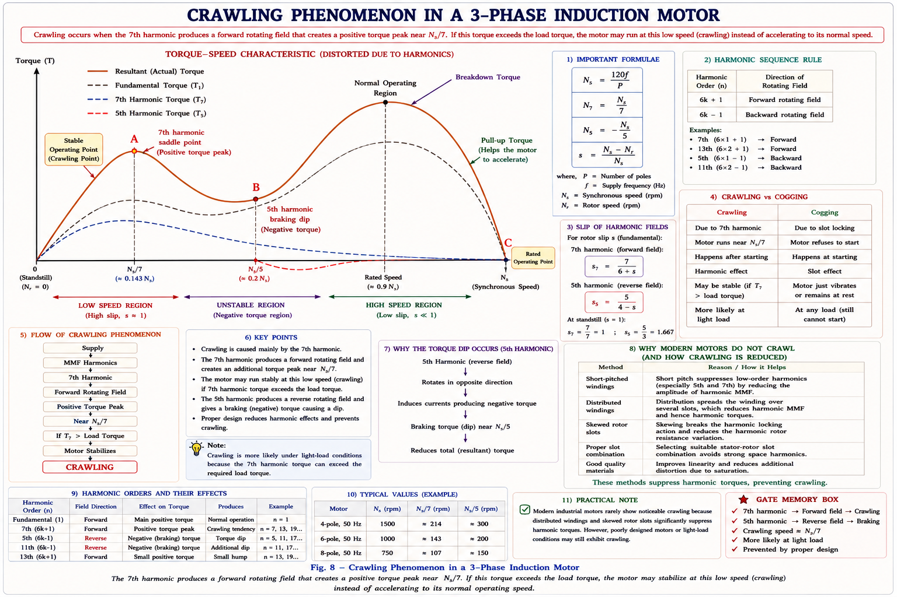
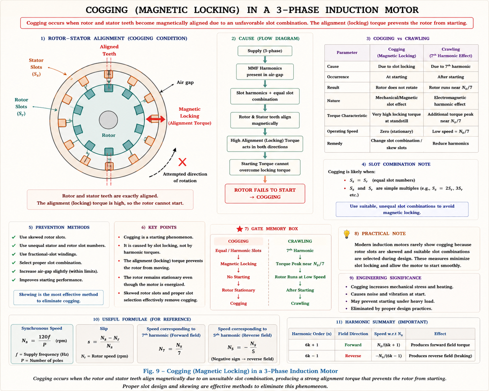

Induction Generator, Deep Bar & Double Cage rotors, Crawling, Cogging, Harmonics, and the Inverted Induction Motor — with full textbook theory, inline SVG diagrams, and GATE/IES previous-year questions.
An induction machine operates in generating mode when its rotor is driven by a prime mover at a speed greater than synchronous speed (N > Ns), making the slip negative (s < 0). Under this condition, it converts mechanical energy from the prime mover into electrical energy and feeds it back to the supply grid.[1]
When an induction machine is connected to an infinite bus (large synchronous generators supplying constant voltage & frequency) and its shaft is rotated faster than synchronous speed by a prime mover, it acts as an Induction Generator — supplying active power (P) to the bus while drawing reactive power (Q) from it.

When the rotor speed equals synchronous speed (N = Ns, s = 0), there is no torque and no power transfer. As N is pushed beyond Ns by the prime mover, the torque reverses direction (becomes negative / braking torque on prime mover side), causing the machine to deliver active power to the connected bus.[2]
An induction generator cannot operate standalone because it requires reactive power (Q) for magnetisation. When connected to an infinite bus with synchronous generators, the active power supplied to the bus depends on the frequency of reactive power drawn — the bus frequency, not the rotor speed.
This makes the frequency of the active power supplied by the induction generator independent of speed variation (as long as connected to the bus). Therefore, it is widely used for variable-speed power generation from non-conventional sources such as wind mills and mini hydro plants.[1]

In remote/isolated locations with no grid connection, a capacitor bank can be connected across the stator terminals to supply the required reactive power locally. This arrangement is called a Self-Excited Induction Generator (SEIG).[2]
The principle is analogous to voltage build-up in a self-excited shunt DC generator. The key steps are:
Step 1: The rotor must have some residual flux — achieved by running the machine as an induction motor for some time.
Step 2: The rotor is driven above synchronous speed. Residual flux induces a small voltage in the stator.
Step 3: Capacitor bank connected across the stator draws leading current, supplying reactive power for flux development.
Step 4: Cumulative build-up of flux occurs in the air gap, until stator and rotor cores saturate, stabilising the terminal voltage.

Not suitable for loads demanding high reactive power (e.g., large induction motors during starting). The capacitor bank must supply reactive power demand of both the generator and the load. Without effective reactive power control, terminal voltage will vary with load. Effective control is required to maintain stable voltage.
Because the frequency of active power supplied is independent of speed variation (when on-grid), and the SEIG enables standalone operation, induction generators are widely used in wind mills, mini hydro plants, and other variable-speed non-conventional generation systems.
About 90% of induction motors manufactured worldwide are of the squirrel cage type because of their robust construction, low cost, maintenance-free operation, and good running efficiency. However, the basic limitation of squirrel cage IM is its low starting torque.[2]
To increase starting torque without affecting running efficiency, special rotor constructions are adopted. The underlying principle for both types is the skin effect:
At high frequency (rotor frequency = slip × supply frequency), current tends to crowd toward the outer surface of a conductor — this is the skin effect. This increases effective resistance and reduces effective inductance of the rotor bars. At starting, rotor frequency equals supply frequency (slip = 1), so skin effect is maximum. At running speed, rotor frequency is very small (s ≈ 0.03–0.06), so skin effect is negligible.
Two special constructions exploit this skin effect:
The deep bar rotor contains high-depth (deep) slots in which narrow conducting bars are placed and solidly short-circuited at both ends with end rings.[1]

During Starting (slip ≈ 1, rotor frequency = supply frequency): Skin effect dominates and current is forced to flow only in the top (outer) region of the deep bar. This reduces the effective cross-sectional area, thereby increasing rotor resistance. High rotor resistance results in high starting torque while limiting starting current.[1]
During Running (slip ≈ 0.03–0.06, rotor frequency very low): Skin effect becomes negligible. Current spreads uniformly across the entire cross-section of the bar, offering low resistance for efficient running. Running efficiency is not affected.
Due to the deep slot, leakage reactance at standstill is high. Therefore these motors have less maximum (breakdown) torque — poor overload capability. They are used for small to medium rating applications that comparatively demand high starting torque (e.g., fans, compressors).

The double cage rotor (also known as the Boucherot cage rotor) contains two concentric cages within each rotor slot, separated by a narrow air gap called a constriction. Both cages are short-circuited by end rings on both sides.[2]

During Starting (high rotor frequency): The constriction between cages has high leakage reactance at supply frequency. Current is forced to flow predominantly in the outer cage (high resistance, resistive in nature). This gives high starting torque while limiting starting current.[1]
During Running (low rotor/slip frequency): At low slip frequency, leakage reactance of the constriction becomes negligible. Current shifts to the inner cage (low resistance), providing low rotor circuit loss and therefore high running efficiency. Starting torque is increased without affecting running efficiency.
The constriction (narrow air gap between cages) reduces the leakage reactance of the rotor at standstill, resulting in more maximum (breakdown) torque compared to the deep bar rotor. Therefore double cage gives better overload capability.

In the equivalent circuit, the two cages are represented as two parallel branches on the rotor side: Ri/s, Xi (inner cage) and Ro/s, Xo (outer cage), both connected to the magnetizing branch. The outer cage has high Ro, low Xo; inner cage has low Ri, high Xi.
| Parameter | Deep Bar | Double Cage |
|---|---|---|
| Construction | Single deep narrow slot | Two concentric cages with constriction |
| Principle | Skin effect on single bar | Frequency-dependent current sharing between cages |
| Starting Torque | Good (higher than normal cage) | Excellent (best of both) |
| Maximum (Breakdown) Torque | Lower (high leakage reactance at standstill) | Higher (constriction reduces leakage reactance) |
| Overload Capacity | Limited | Better |
| Running Efficiency | Good | Good |
| Cost & Complexity | Low | Higher (two cages) |
| Application | Small-medium rating, high starting torque | Large rating, high starting torque requirement |
For large rating high starting torque requirements, slip-ring (wound rotor) induction motors are preferred over double cage, as external rotor resistance can be precisely controlled. Special cage constructions are used for applications comparatively demanding high starting torque at moderate cost.
Crawling is an abnormal behaviour of squirrel cage induction motors where the motor runs stably at a much lower speed (typically Ns/7 ≈ 1/7th of synchronous speed) during starting, instead of accelerating to normal operating speed.[2]
The 3-phase supply voltage is not perfectly sinusoidal in practice; it contains time harmonics due to non-linear loads and supply distortions. The harmonic content can be grouped as odd harmonics (3m, 3m−1, 3m+1 series).

Even though the crawling point (A) is a stable operating point, it is highly undesirable because it results in: high slip, high stator & rotor currents, excessive heat, huge noise, and very low speed. If starting torque is insufficient to overcome the saddle point, the motor will stall at N ≈ Ns/7.
Cogging (also called magnetic locking or teeth locking) is a tendency of the rotor to lock magnetically with the stator due to alignment between rotor and stator teeth (slot openings).[2]

If the rotor and stator slot numbers are exactly equal and parallel to each other, the alignment torque (tendency to keep teeth aligned) can dominate over the accelerating torque — especially in squirrel cage motors where starting torques are already low (reduced voltage starting). The rotor refuses to start and remains stationary.
Crawling is caused by harmonic (7th) torque acting in the motoring region — motor runs at Ns/7.
Cogging is caused by magnetic alignment of teeth — motor refuses to start at all. Both are issues in squirrel cage IMs. Both are remedied primarily by rotor skewing.
In a conventional induction motor, the stator receives the 3-phase supply and the rotor is the output shaft. In an Inverted (Rotor-Fed) Induction Motor, the 3-phase supply is applied to the rotor by closing/shorting the stator terminals. The stator (fixed part) now tends to rotate, and the rotor rotates in the opposite direction to the magnetic field.[1]
This is only realizable in slip-ring (wound rotor) IM, because the rotor winding is accessible via slip rings and brushes. In squirrel cage motors, there is no access to the rotor conductors.
When 3-phase supply is applied to the rotor via slip rings, the rotor produces a rotating magnetic field (RMF) at speed Ns relative to the rotor. This RMF induces currents in the stator. The induced stator currents produce a torque that tries to make the stator rotate. Since the stator is mechanically fixed (bolted to the frame), by Newton's 3rd law, the reaction torque causes the rotor to rotate in the opposite direction to the original RMF.
| Parameter | Squirrel Cage IM | Slip-Ring (Wound Rotor) IM |
|---|---|---|
| Rotor Construction | Solid aluminium/copper bars in slots, short-circuited by end rings | 3-phase wound winding, brought out via slip rings & brushes |
| Air Gap | Comparatively small → less magnetising current → better PF | Comparatively larger (overhang + depth of slot → higher leakage) |
| Rotor Resistance | Low (solid bars) → higher running efficiency η | Higher (wound winding with overhang) → slightly lower η |
| Starting Torque | Low (for normal cage); Improved for deep bar/double cage | Excellent — external rotor resistance gives max torque at any desired slip |
| Max / Breakdown Torque | Comparatively higher overload capacity (normal cage) | Limited by fixed winding resistance at full speed |
| Slip Ring / End Ring | End ring: No overhang → low leakage reactance | Slip ring: Overhang + increased depth → higher leakage reactance |
| Construction | Simple, low cost, mechanically strong, less weight, maintenance-free | Complex, more expensive, requires maintenance of slip rings/brushes |
| Speed Control | Difficult (variable frequency drive needed) | Easy via external rotor resistance (simple but lossy) |
| Starting Current | High (5–7 × full load current) | Reduced by external rotor resistance |
| Applications | Fans, pumps, compressors, most general-purpose drives | Hoists, cranes, slip ring motors for high-starting torque large loads |
Which of the following correctly completes the statement?
Explanation: An induction generator operates with N > Ns (s < 0). It supplies active power but cannot self-magnetise — it must draw reactive power from synchronous generators connected to the same bus. It cannot operate standalone.
Explanation: Crawling is caused by the 7th harmonic of the supply/flux wave, which creates a fictitious synchronous speed at Ns/7. If the fundamental torque is insufficient, the motor settles at this harmonic stable point (≈1/7th of Ns). Magnetic locking (teeth alignment) is cogging — a separate phenomenon.
Explanation: The outer cage has small cross-sectional area (fewer conductors) → high resistance. This ensures during starting (high slip/high rotor frequency), current preferentially flows in the outer cage (low reactance path), giving high starting torque. The inner cage has large cross-section → low resistance, for efficient running.
Explanation: Cogging (magnetic locking) is eliminated by: (1) Skewing rotor slots — prevents teeth from simultaneously aligning. (2) Using different and co-prime slot numbers for stator and rotor — ensures teeth can never fully align at the same instant.
If the fundamental synchronous speed is Ns, then the slip for the 5th harmonic component is:
Solution: The 5th harmonic has opposite phase sequence, so its fictitious synchronous speed is −Ns/5.
s₅ = (Ns − (−Ns/5)) / Ns = (Ns + Ns/5) / Ns = 6/5 = 1.2. Since s₅ > 1, it acts in the braking region, producing plugging action.
(a) Crawling Speed:
Crawling is caused by the 7th harmonic. Crawling speed = Ns/7
Ns = 120f/P = 120×50/6 = 1000 rpm
Crawling speed = 1000/7 ≈ 143 rpm
(b) Harmonic Synchronous Speeds:
5th harmonic: Ns5 = Ns/5 = 1000/5 = 200 rpm (but phase sequence is reversed → actual Ns5 = −200 rpm)
7th harmonic: Ns7 = Ns/7 = 1000/7 ≈ 143 rpm
(c) Slip of 7th harmonic at N ≈ 143 rpm:
s₇ = (Ns7 − N) / Ns7 = (143 − 143) / 143 = 0
(At the crawling speed, the rotor runs at the 7th harmonic synchronous speed — slip is zero for the 7th harmonic, hence maximum 7th harmonic torque is developed here.)
From fundamental: s_fundamental = (1000 − 143)/1000 = 0.857
Have a question on Induction Generator, Deep Bar/Double Cage, Crawling, Cogging, or Inverted IM? Type below or pick a suggestion.
Operates at N > Ns (s < 0). Supplies active P, draws reactive Q from bus. Cannot operate standalone. Used in wind mills, mini hydro. Frequency independent of speed.
Capacitor bank replaces grid reactive power supply. Voltage builds up via residual flux + cumulative saturation. Bus voltage varies with load unless controlled.
Skin effect in single deep bar. High R at start (s=1), low R at run (s≈0). Low max torque (high standstill leakage reactance). For small-medium motors.
Outer cage (high R) for starting; inner cage (low R) for running. Constriction reduces standstill leakage reactance → better max torque than deep bar. Large motors.
7th harmonic creates stable saddle at Ns/7 (s₇ = 6/7). Motor runs at ~1/7th speed. High slip, noise, current. Eliminated by skewing and short-pitched windings.
Magnetic locking between stator & rotor teeth. Rotor refuses to start. Caused when slot numbers equal and parallel. Eliminated by rotor skewing + unequal slot numbers.
Three-Phase Synchronous Machines — salient and non-salient pole rotors, two-reaction theory, power angle characteristics, synchronising torque, and parallel operation — with GATE & IES exam focus.
All technical content is derived from the following standard textbooks. No content is reproduced verbatim — all explanations, examples, numerical values, and diagrams are original to Aarova AI.